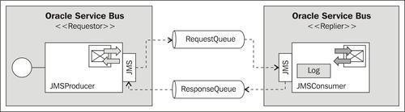
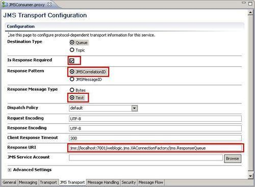
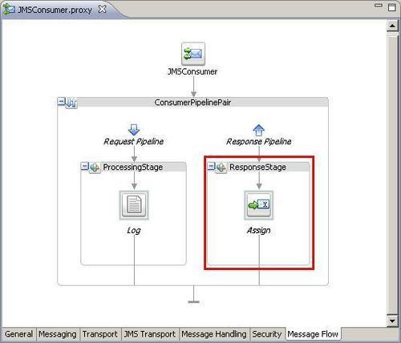
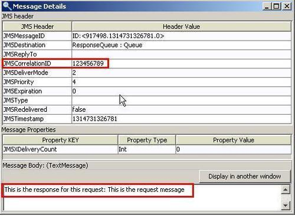
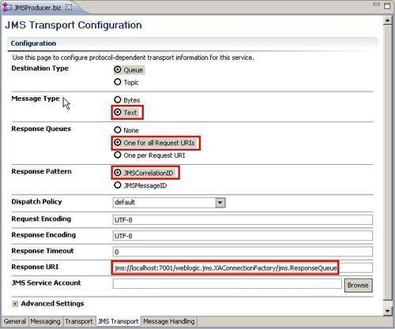
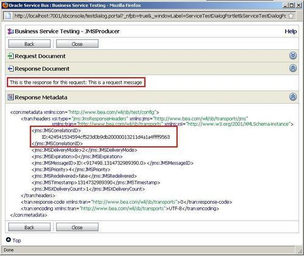
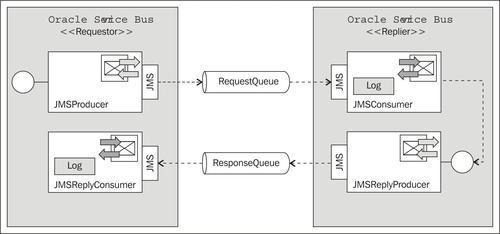

This recipe shows you how to implement the request/reply design patterns over JMS. For this we need two queues, the RequestQueue where the request is sent to and consumed by the replier, and the ResponseQueue where the answer/reply is sent to by the replier and then consumed by the initial requester.
This is shown in the following diagram where on the left the requestor is implemented by a business service on OSB, and on the right the replier is implemented as a proxy service on OSB.

In a real case, the OSB normally only plays one role of either the requestor or the replier, and hence it is only on one side. On the other side, we would usually find legacy systems only capable of communicating through queues, such as a mainframe system.
For this recipe, we will use the two queues RequestQueue and ResponseQueue from the OSB Cookbook standard environment.
In order to start, we will use the setup from the recipe Consuming messages from a JMS queue. Import the base OSB project into Eclipse from \chapter-3\getting-ready\sync-request-response-over-jms-queue.
With the setup from the Consuming messages from a JMS queue recipe, we already have the replier side partially implemented with the JMSConsumer proxy service consuming from the RequestQueue. Let's change the behavior of the proxy service to send a response on the ResponseQueue. Perform the following steps in OEPE:
jms://localhost:7001/weblogic.jms.XAConnectionFactory/jms.ResponseQueue into the Response URI field.
body into the Variable field.<soap-env:Body>This is the response for this request: {$body/text()}
</soap-env:Body>

We have the replier side ready and working. So let's test this by putting a message into the RequestQueue and then check the ResponseQueue for the answer message. We will use QBrowser here, as it makes testing of multiple queues much easier. Check the Using QBrowser Admin GUI for accessing JMS queues/topics recipe for how to install and use QBrowser.
In QBrowser, perform the following steps:
This is the request message into the Message body field.
So the replier side works perfectly. Let's now implement the requestor side with the business service sending the request to the RequestQueue and waiting for the response on the ResponseQueue. In OEPE, perform the following steps to implement the business service:
business folder to the sync-request-response-over-jms-queue project and create the JMSProducer business service. jms://localhost:7001/weblogic.jms.XAConnectionFactory/jms.RequestQueue and click Add. jms://localhost:7001/weblogic.jms.XAConnectionFactory/jms.ResponseQueue into the ResponseURI field.
Now we have both the requestor and replier role implemented in OSB, once as a business service and once as a proxy service. Let's test the business service to see that the request-response pattern works. In OSB console, perform the following steps:

In the Response Metadata section, the JMS headers are shown. We can see the value of the JMSCorrelationID used for correlating the request and response on the business-service side.
This recipe implements a sync-to-async bridging, where on the business service (the requestor side) the request-response processing is done in a synchronous manner. The business service will wait until the reply message from the replier arrives. The communication between the requestor and replier is done in an asynchronous manner using two queues. To make sure that the requestor can correlate the original request to the correct reply message, some correlation information is passed between the requestor and the replier by using the JMS Header JMSCorrelationID.
When the requestor creates a request message, it has to assign a unique identifier to the request that is different from those for all other currently outstanding requests (for example, requests that do not yet have replies). When the receiver processes the request, it saves the identifier and adds the request's identifier to the reply.
JMS request/response messaging does not provide reliable responses because the mapping of the correlation ID is stored in memory. If there is a failure/restart in between sending the request message and receiving the reply message, the response will be discarded.
If this is a problem, then JMS request/response should not be used. It can be replaced by two JMS one-way proxies. The first one-way JMS proxy delivers the message and a second one-way JMS proxy in the reverse direction delivers the reply message. This scenario is shown in the There's more section.
The request-reply pattern over queues can also be implemented asynchronously, without using the correlation feature of the OSB as shown in the recipe so far.
In that scenario, we still use two queues, the RequestQueue holding the request message and the ResponseQueue holding the reply message. Instead of configuring the proxy service on the replier side to send a response message, an additional business service JMSReplyProducer is called that writes to the queue. To consume the reply message on the requestor side, an additional proxy service JMSReplyConsumer is needed. This is represented in the following diagram:

Compared to the synchronous version shown in the previous diagram, the asynchronous version won't support any correlation on the requestor side. So the request and the response processing are completely separate on the requestor side.
We won't show the implementation of the recipe here. Based on the recipes Sending a message to a JMSqueue and Consuming messages from a JMS queue of this chapter, the reader should be able to implement this recipe without a problem.